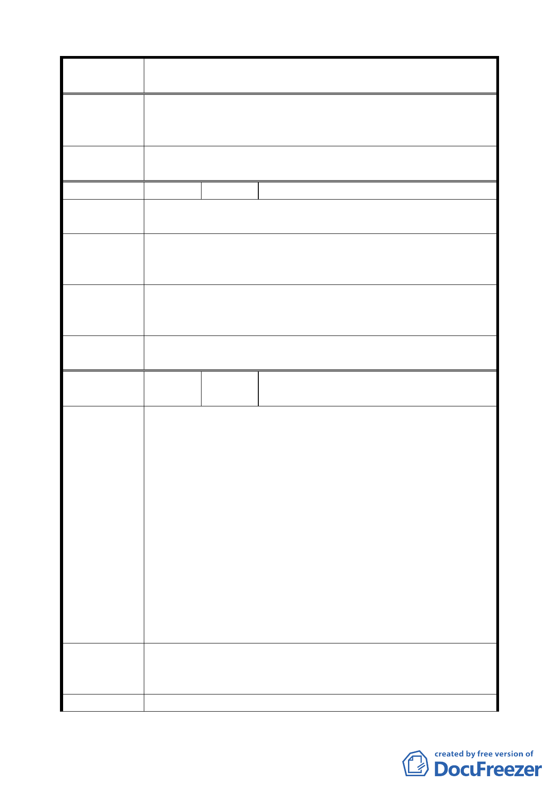

案 名 臺北市文山區都市計畫通盤檢討（細部計畫）案
（94.7.25）
（94.10.17）
（94.11.24）
委員會議
決議
同編號 10。
編 號 ２3 陳情人 陳武雄、陳忠亮（09430173600）
陳 情 理 由 建議位置：文山區華興段四小段 42、43、44、45、46 至 55
（ 木 柵 ） 等地號。
陳情人所有土地因部分土地涉及山限區第二種住宅區。案經
建 議 辦 法 申請地政處辦理分割竣事。請就平地部分變更為第三種住宅
區以符合現況，以保障土地所有權益。
專案小組
審 查 結 論 維持原計畫。
（94.11.24）
委員會議
決議
依專案小組審查結論辦理。
編
號 ２4
陳情人
吳祚榮里長、萬福國小家長會
（09430455400、09430455600）
一、 原道路用地於 82、83 年間，經市府各相關單位會勘同
意施作為遊戲巷，多年來各界反應頗佳現變更為公園用
地立意良好亦符合事實。
二、 文山區萬福國小創校已 15 年，創校初期原規劃有學生
活動中心，因當時經費節縮而未建，影響學校功能甚巨。
三、 萬福國小因校幅狹小空間不夠使用，以致一直無法擁有
陳情理由
室內活動場所，每次學校大型活動皆利用地下避難空間
（細景 7）
或外借他處，缺乏校園完整性。
四、 本校學區包含萬年里、萬隆里、萬和里，附近有占地數
十公頃的水源快速道路河濱公園可供居民使用，卻無一
完整合適可供全體里民聚會之場所。本校素為附近里民
運動健身處，倘學校能有醫學生活動中心，適足以提供
學校與所有里民最佳之聚會活動場所，其所提供之實際
效用，為全體里民與學校雙享雙贏之規劃。
此次通盤檢討若能將此道路用地併同中間人行道，以及緊鄰
建 議 辦 法 本校部分萬年公園用地變更為學校用地，以為興建萬福國小
學生活動中心之用。
專 案 小 組 一、依據臺北市教育局代表說明可知目前萬福國小符合教學
三九